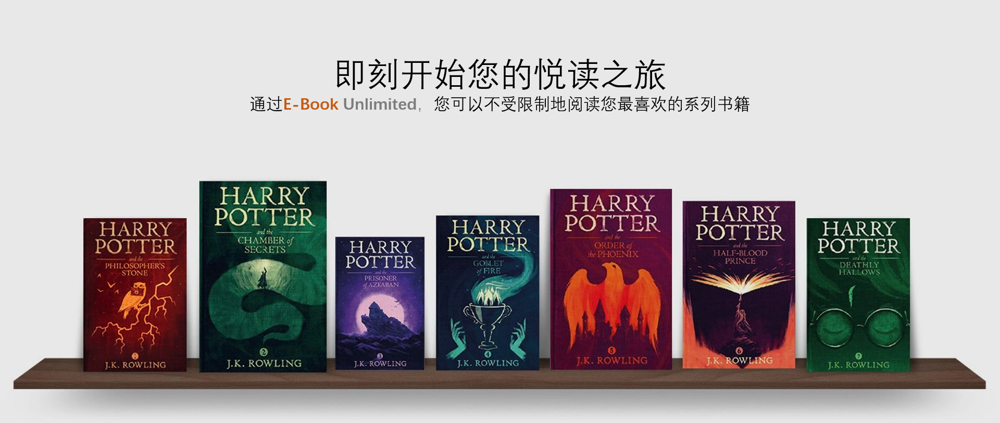

书籍推荐

《流浪地球》是2008年11月，湖北长江出版集团，长江文艺出版社出版的书籍，作者是刘慈欣。该书讲述了庞大的地球逃脱计划，逃离太阳系，前往新家园。 2018年6月，《流浪地球》作为由中国科学技术出版社出版的《刘慈欣少儿科幻系列》中的一册再次出现在读者们眼前。 2018年11月23日，荣获2018中国科幻大会水滴奖评委会特别奖。

《月亮和六便士》是英国小说家威廉· 萨默赛特·毛姆的创作的长篇小说，成书于1919年。 作品以法国印象派画家保罗·高更的生平为素材，描述了一个原本平凡的伦敦证券经纪人思特里克兰德，突然着了艺术的魔，抛妻弃子，绝弃了旁人看来优裕美满的生活，奔赴南太平洋的塔希提岛，用圆笔谱写出自己光辉灿烂的生命，把生命的价值全部注入绚烂的画布的故事。
优惠活动

E-Book Unlimited电子书包月服务
E-Book Unlimited电子书包月服务7天试用仅需0.1元，立即加入畅读指定书籍！